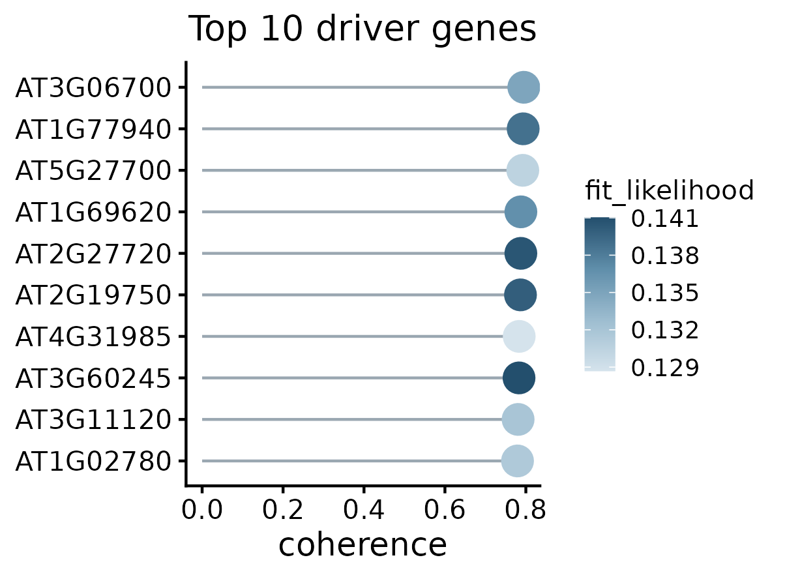

Driver Gene Ranking
Prioritize candidate genes whose RNA velocities are consistent with expression changes implied by the velocity graph.
Before you begin¶
Start with the pv object from RNA Velocity Analysis, after computing expression moments, fitted dynamics, RNA velocity and the velocity graph.
Driver-gene ranking uses fitted likelihoods and velocity coherence. Latent time and terminal-state inference are not required.
Rank candidate driver genes¶
Compute the ranking:
pv <- rank_velocity_genes(pv)The function first filters genes by fitted likelihood, then ranks the retained genes by decreasing velocity coherence.
Coherence measures the correlation across cells between a gene’s estimated velocity and its expected expression change under the velocity transition matrix. Higher scores indicate stronger agreement with the inferred dynamics.
The default settings are:
likelihood_quantile = 0.3— retain approximately the top 30% of eligible fitted genes by likelihood; ties at the threshold may retain additional genes.min_likelihood = 0— apply no additional positive absolute likelihood threshold.coherence_mode = "s_only"— rank genes using spliced velocity coherence.n_top = NULL— retain all genes passing the filters and coherence checks.
Genes with missing coherence scores or no non-zero spliced velocities are excluded from the resulting table.
Inspect the ranked genes¶
Retrieve the results:
driver_table <- get_velocity_gene_stats(pv)
head(driver_table, 10)The table is stored in pv@misc$velocity_gene_stats and contains:
gene— the gene identifier used in the object.coherence— the score used for ranking.coherence_s— coherence calculated from spliced velocity and expression.coherence_u— coherence calculated from unspliced velocity and expression.mean_abs_velocity— mean absolute spliced velocity across cells.n_active— number of cells with non-zero, non-missing spliced velocity.fit_likelihood— fitted likelihood from dynamics recovery.
Gene identifiers follow the naming scheme selected during object construction: Gene_ID for loom_gene_attr = "Accession" or Gene_symbol for loom_gene_attr = "Gene".
Visualize the top genes¶
Display the ten highest-ranked genes:
plot_driver_genes(pv, n_top = 10)
- The horizontal position represents velocity coherence.
- Genes are ordered by decreasing coherence.
- Point colour represents fitted likelihood.
Here, n_top controls how many genes are displayed without changing the stored ranking.
Adjust the ranking¶
To rank genes using the mean of spliced and unspliced coherence:
pv <- rank_velocity_genes(pv, coherence_mode = "mean")To apply an absolute likelihood threshold and retain at most 50 ranked genes:
pv <- rank_velocity_genes(pv, min_likelihood = 0.1, n_top = 50)The default top-30% likelihood filter still applies. Set likelihood_quantile = 1 to disable that relative filter:
pv <- rank_velocity_genes(pv, min_likelihood = 0.1, likelihood_quantile = 1)Each call replaces the ranking stored in pv. Retrieve the table again after changing the settings.
High coherence identifies genes consistent with the inferred velocity field. It does not by itself establish that a gene causally controls a developmental transition. Examine candidate genes alongside their phase portraits, expression patterns and biological annotations.
Continue to intron-retention analysis¶
Continue with Intron Retention Analysis to explore IR-associated signals independently of the two-state velocity model.